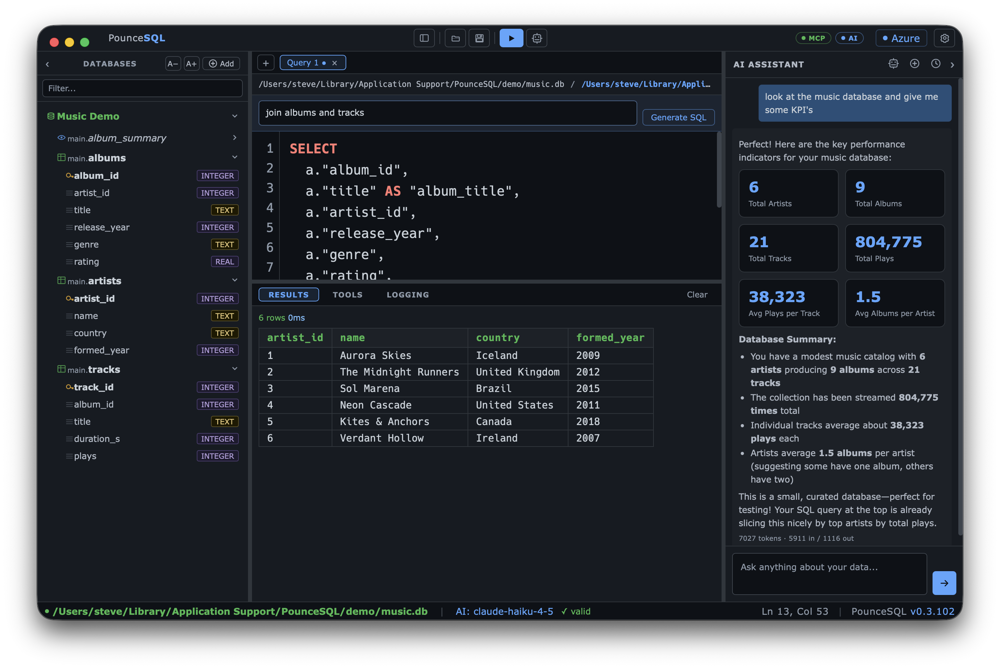
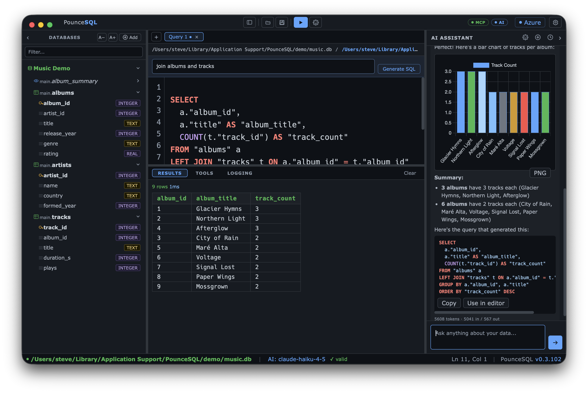
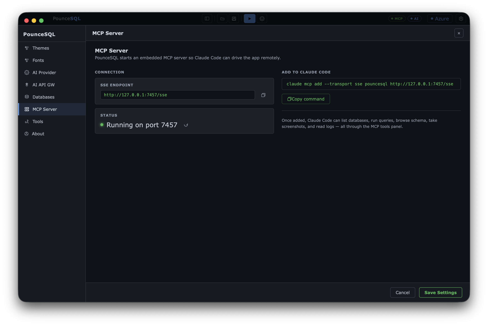
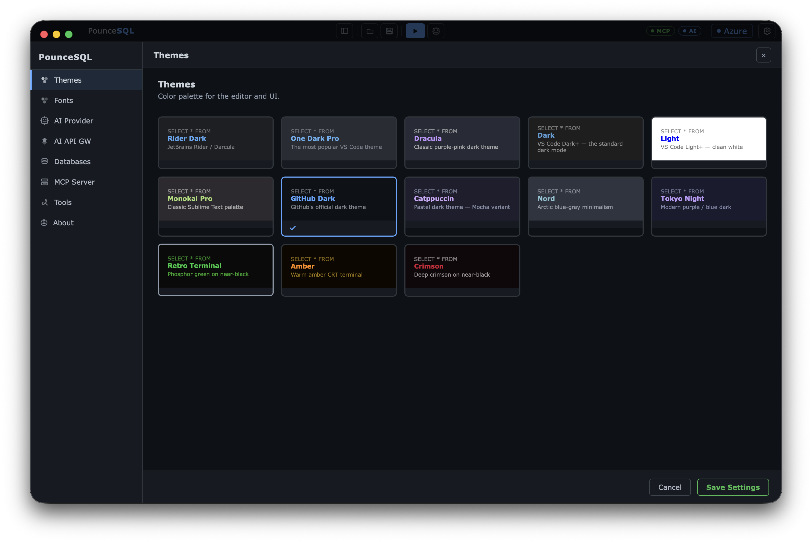

One fast, native app for all four databases you actually use — Azure SQL, SQL Server, PostgreSQL and SQLite — and it's free. Its AI assistant writes the query, charts the results, and explains them in plain English.
brew trust pounceapps/tap
brew install --cask pounceapps/tap/pouncesqlHomebrew 6.0+ asks you to trust a third-party tap once — brew trust does that. Then start the AI with free Google AI, a local model, or a few dollars of OpenAI/Anthropic credits.
Ships with a demo database — open it and start querying, no server or login.

Sign in with your directory — browse subscriptions, servers and databases. No passwords stored.
2017–2025+, local or domain-joined. SQL login, Windows/NTLM, or passwordless Kerberos SSO.
Over LAN, VPN or Tailscale. Pin a whole server and browse every database it hosts.
Open any .db file — no server, no login. Pick the file and query.
Whether you're learning SQL, watching your budget, or wiring up an AI toolchain — it meets you where you are.
Describe what you want and watch the AI build the query — then read it, tweak it, run it. Or write your own and ask "explain this." A patient tutor working on real data.
Free with Google AI. $0 and fully private with a local coder model in Ollama — no data leaves your Mac. Or drop $10–20 of OpenAI / Anthropic credits for the top models. The app itself is always free.
Pair it with PouncePad and Claude Code. Claude drives PounceSQL over the built-in MCP server — querying, diagramming, dropping results into PouncePad — while you watch it happen. One workflow, genuinely powerful.
It runs read-only queries against your live connection, then renders the answer the way you'd actually want it. Read-only by default; writes only when you say so.

Ask in plain language. PounceSQL generates engine-correct SQL, runs it, and turns the result into a Chart.js visual — bar, line, scatter — right in the chat. Every answer shows the exact SQL, with Copy and Use in editor.
"Give me the KPIs" returns clean metric cards and a plain-English summary you can actually paste into a report. Diagrams (Mermaid), heatmaps, Markdown tables and LaTeX all render inline — and export as PNG.
Pin a server and expand it like a tree — every database, schema, table and column, with type badges. Filter across databases; right-click to preview, count, or generate a query.
Syntax highlighting, table- and column-aware autocomplete, and an optional live syntax checker, tuned to the connected engine (T-SQL, Postgres, SQLite). Run the whole editor or just the selection.
Markdown, highlighted code with Copy / Use-in-editor, Mermaid diagrams, Chart.js charts, heatmaps, KPI cards, sortable grids with CSV / JSON export, and LaTeX.
Your last 50 conversations are saved automatically — reload, delete, export a chat as Markdown, or save any diagram or chart as PNG.
The assistant and MCP tools never run a write (INSERT/UPDATE/DELETE/DDL) unless you explicitly turn it on. Query with confidence.
Thirteen editor themes, separate fonts for interface and editor, independent sizing for editor, tree, results and status bar, and a collapsible sidebar.

PounceSQL runs a local Model Context Protocol server. One command wires it into Claude Code — then agents can list databases, browse schema, run read-only queries, even take screenshots. You watch every tool call happen live in the Tools panel.
claude mcp add --transport sse pouncesql http://127.0.0.1:7457/sse
From VS Code Dark+ and GitHub Dark to Dracula, Nord, Tokyo Night, and the phosphor-green Retro Terminal — each with a live SQL preview. Pick separate fonts and sizes for the interface, editor, tree, and results.
Pick a provider per your policy — cloud, enterprise gateway, or fully local — and switch models from a dropdown in the chat header. Each provider remembers its own endpoint, model and key.
Direct API key with native tool-calling — GPT, Claude and Gemini can inspect your schema and run read-only queries. Pick any model from the header.
Point at http://host:11434 (localhost, LAN or Tailscale). Your data never leaves your machine — ideal for sensitive work. Load the model list from the server.
OAuth2 gateways with discovery. Routes each model by its native format, shows cost per model, and a PHI-cleared badge — with per-message token counts and session spend.
| Option | Cost | Good for | |
|---|---|---|---|
| Google AI (Gemini) | Free tier | The easiest free start — grab a key in a minute. | Get a key ↗ |
| Ollama (local) | Free · private | Runs on your Mac. Try a coder model — nothing leaves your machine. | Download ↗ |
| OpenAI | ~$10–20 | GPT models. Pay-as-you-go credits stretch a long way. | Get a key ↗ |
| Anthropic (Claude) | ~$10–20 | Claude — excellent at SQL and clear explanations. | Get a key ↗ |
Paste the key in Settings → AI Provider, pick your model, and you're chatting with your data. Switch providers anytime.
Free, native, and notarized for macOS 13+ (Apple Silicon).
brew trust pounceapps/tap
brew install --cask pounceapps/tap/pouncesqlRecommended — stays current with brew upgrade. Homebrew 6.0+ needs the one-time brew trust for third-party taps.
Good to know: the AI assistant and MCP tools are read-only by default. AI can be
wrong — review generated SQL before running, and try a non-production database first. Provided as is.
Azure SQL uses your az login session — see the Azure sign-in help.